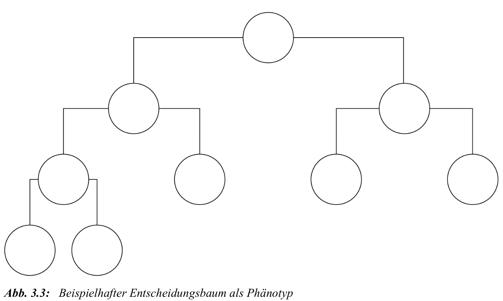

Algorithmusspezifikation
- Algorithmus spezifizieren:
- problemspezifische und problemunspezifische Parameter des Algorithmus festlegen
- Erstellung der Individuen für die Anfangspopulation
- Codebaustein: es wird lediglich main aufgerufen
if __name__ == '__main__'
main()Theoretisch insgesamt folgende Schritt
- Problemanalyse
- Auswahl des Evolutionsverfahrens
- Spezifikation eines Individuums
- Definition der Fitness eines Individuums
- Initialisierungsstrategie und Terminierungskriterium
- Festlegung des Selektionsverfahrens
- Festlegung des Modifikationsverfahrens
- Festlegung des Ersetzungsverfahrens
Problemanalyse:
Bezugsrahmen des Algorithmus \(\Leftrightarrow\) Hyperparameteroptimierung des Entscheidungsbaumverfahrens optimieren:
- Splittingkriterium
- Maximale Tiefe des Baums
- Minimale Anzahl von Datenpunkten, um einen Split durchzuführen
Auswahl des Evolutionsverfahrens:
Evolutionsverfahren:
- genetische Algorithmen
- evolutionäre Strategien
- genetische Programmierung
- evolutionäre Programmierung
Hier lediglich: genetische Algorithmen vs. evolutionäre Strategien, da Fokus auf Hyperparameteroptimierungen
Der wesentliche Unterschied liegt in der Art der Hyperparameter:
Genetische Algorithmen erfordern diskrete Parameter (ganzzahlig oder nominal).
Evolutionsstrategien können auch kontinuierliche Parameter verarbeiten.
Für den beschriebenen Anwendungsfall (Optimierung eines Entscheidungsbaums) ist der genetische Algorithmus die passende Wahl, da alle Hyperparameter diskret sind:
Splittingkriterium: Nominal (Gini, Entropie, etc.)
Maximale Tiefe: Ganzzahlig
Minimale Anzahl für Split: Ganzzahlig
Spezifikation eines Individuums:
Die drei Gene des Genotyps sind bereits bekannt als die zu optimierenden Hyperparameter:
Der zugehörige Phänotyp ist der Entscheidungsbaum, der mit den Parameterausprägungen des Genotyps gebaut wurde:

Dieser Phänotyp soll im weiteren Verlauf auf seine Fitness bewertet werden
Definition der Fitness eines Individuums:
Fitness: wie gut löst Individuum das Problem
Hier also Kennzahlen, die vom Optimierungsziel abhängen:
- Klassifikationsprobleme: Accuracy, Precision, Recall
- Regressionsprobleme: Abweichungsmaße
Konkret: Accuracy – der Anteil an richtig klassifizierten Datenpunkten – des Phänotyps als Fitnessmaß
Initialisierungsstrategie und Terminierungskriterium:
Initialstrategie: Auswahl der Populationsgröße
- Definiert Anzahl Individuen in Initialpopulation & Folgenden
- GA klassisch: große Populationen
- ES: kleinere Populationen
Terminierung des EA: Kriterien
- Anzahl an Generationen: hier als frei einstellbares Kriterium
- Güte der Lösungskandidaten: Fitness des besten Lösungskandidaten in der Population oder Durchschnitts-Fitness
- Konvergenz der Population: Beenden bei lokalem Optimum: Individuen sehr ähnlich basierend auf einem Maß der Unterschiedlichkeit
Warnung: Bei Güte & Konvergenz kann falsches Ambitionsniveau zu Endlosschleifen führen.
Festlegung des Selektionsverfahrens:
Selektionsverfahren: Auswahl der Individuen (fitness-basiert), die für die Rekombination in Frage kommen und Eigenschaften an nächste Generation weitergeben dürfen. Im Folgenden drei Beispiele:
- Roulette-Wheel-Methode: Auswahlwahrscheinlichkeit proportional zur Fitness
- Mechanismus: Individuen erhalten proportional zu ihrer Fitness einen Bereich auf einem Rouletterad. Zwei “Würfe” wählen zwei Elternteile.
- Bereichsgröße für jedes der \(k=1,\ldots,I=8\) Individuen entspricht dem Anteil an der Gesamtfitness: \[\frac{\text{Fitness}(k)}{\sum_{i=1}^{I} \text{Fitness}(i)}\]
- Voraussetzung: Keine negativen Fitnesswerte
- Turnierverfahren: Das fitteste Individuum einer zufälligen Untermenge gewinnt
- Mechanismus: Zufällige, gleichverteilte Auswahl einer Teilmenge; das beste Individuum wird Elternteil. Ein neues Turnier findet für den zweiten Elternteil statt.
- Effekt: Erhält Diversität, da nicht immer das global beste Individuum gewinnt.
- Selektionsdruck: Abhängig von der Größe der Untermenge (kleine Teilmenge -> geringer Druck; große Teilmenge -> hoher Druck).
- Rangbasiertes Verfahren: Auswahlwahrscheinlichkeit basiert auf dem Fitness-Rang
- Mechanismus: Erstellung einer Rangliste nach Fitness (Rang 1 = fitteste). Der Rang bestimmt die Auswahlwahrscheinlichkeit.
- Effekt: Große Fitness-Abstände werden reduziert, kleine vergrößert.
- Vorteil: Verhindert die Dominanz von Ausreißern mit sehr hoher Fitness.
Im Folgenden: Roulette-Wheel-Methode
Festlegung des Modifikationsverfahrens:
Modifikationsverfahren bei EA: zwei Gruppen
- Rekombination
- Mutation
Bei genetischen Algorithmen erfolgt Rekombination i.d.R. per Crossover.
Crossover: Kreuzung von Genbestandteilen der Eltern, um ein oder zwei Nachkommen zu erzeugen.
- n-Punkt-Crossover: n definiert die Anzahl an zufälligen Schnitten in den Elterngenomen, die die zu kreuzenden Teile ergeben.
Hier, zwei bereits selektierte Eltern:
- Beispiel 1-Punkt-Crossover:
- Jedes Elternteil wird an einer zufällig bestimmten Stelle einmal durchschnitten.
- Im folgenden Beispiel wird eine 3 gewürfelt, der Schnitt erfolgt also an Position 3.
Mutation: Zweites Modifikationsverfahren neben der Rekombination.
Zweck: Zufällige Veränderung von Genen einzelner Individuen, um aus lokalen Optima auszubrechen und den Lösungsraum umfassend abzusuchen.
Auswahl: Individuum und Gen werden i.d.R. zufällig gewählt.
Mutationswahrscheinlichkeit:
- Zu Beginn festgelegter Parameter (0-100%), der die Anzahl der zu mutierenden Individuen steuert.
- Sollte in GAs relativ klein sein, da eine zu hohe Rate die Konvergenz verhindert.
Ist ein Individuum zur Mutation ausgewählt, wird ein zufälliges Gen des Individuums verändert. Alternativ können auch mehrere Gene pro Individuum verändert werden:
Problem: Unzulässige Nachkommen Mutation kann Individuen außerhalb des Lösungsraums erzeugen. Dafür gibt es drei Lösungsstrategien:
- Vermeidungsstrategie: Verhindert die Generierung unzulässiger Individuen von vornherein.
- Nachteil: Kann sehr komplex und langsam sein.
- Reparaturstrategie: Unzulässige Individuen werden nach der Mutation so “repariert”, dass sie wieder im Lösungsraum liegen.
- Nachteil: Kann ebenfalls sehr komplex und langsam sein.
- Bestrafungsstrategie: Unzulässige Individuen werden zugelassen, aber mit einer sehr schlechten Fitness versehen, sodass sie aussterben.
- Risiko: Unzulässige Eigenschaften können durch Rekombination weitervererbt werden.
Festlegung des Ersetzungsverfahrens:
Ersetzungsstrategie: Zweites Selektionsverfahren, das bestimmt, welche Individuen in die nächste Generation übernommen werden (Überleben).
Zweck: Steuerung von Diversifikation und Intensivierung, um die durchschnittliche Qualität der Population zu erhöhen.
Ausgangslage: Übergroße Population aus
mbisherigen Individuen undkNachkommen.
Es wird zwischen zwei Strategien unterschieden:
1. Plus-Strategie (m + k)
Mechanismus: Die besten
mIndividuen aus der Gesamtmenge von Eltern und Kindern (m + k) überleben.Folge: Die Qualität der Population ist monoton steigend (kann sich nicht verschlechtern).
Gefahr: Zu schnelle Konvergenz und rascher Verlust der Diversität.
Varianten:
- Maximalalter: Individuen sterben nach einer bestimmten Anzahl von Generationen.
- Kindergarten: Nachkommen sind für einige Generationen vor der Selektion geschützt.
2. Komma-Strategie (m, k)
Mechanismus: Eltern überleben nicht. Die nächste Generation wird nur aus den Kindern gebildet.
Bedingung: Es müssen mindestens so viele Kinder wie Eltern erzeugt werden (
k >= m), um die Populationsgröße zu erhalten. Sind es mehr, werden die bestenmauskKindern ausgewählt.Folge: Eine Verschlechterung der Qualität zwischen Generationen ist möglich.
Vorteil: Ermöglicht Erforschung unbekannter Lösungsräume durch temporäre Akzeptanz schlechterer Fitness. Die Konvergenzgeschwindigkeit sinkt und die Diversität bleibt länger erhalten.
Erstellung Initialpopulation
Die Initialisierung dient der Vorbereitung des EA. Zunächst folgende fünf Schritte:
- Einrichtung der Programmierumgebung
- Laden des Datensatzes
- Algorithmusspezifizierung operationalisieren
- Einführung von notwendiger Datenstrukturen
- Erstellung der Initialpopulation
Wir brauchen nun folgende Codeblöcke:
Einrichtung der Programmierumgebung:
import numpy as np from sklearn.datasets import load_digits import random from sklearn import tree from sklearn.model_selection import cross_val_score from sklearn.model_selection import train_test_split from statistics import meanDann kommt der bereits vorgestelle Teil:
def main(): (popsize, x, y, x_test, y_test, generationen,best, score, score_n, Nachkommen) = Initialisierung() population = anfangspopulation(popsize) ...Nun kommt die Definition der Funtion
Initialisierung()wo auch der Datensatz geladen wird:def Initialisierung(): digits = load_digits() X, X_test, y, y_test = train_test_split(digits.data, digits.target, test_size = 0.2) popsize = 10 generationen = 10 best = [None] * generationen score = [0] * popsize scoreN = [0] * popsize Nachkommen = [None] * popsize return popsize, X, y, X_test, y_test, generationen, best, score, scoreN, NachkommenErstellung der Individuen Fokus liegt auf der Erstellung des Genotyps. Der Phänotyp wird erst im Rahmen der Fitnessbewertung erstellt.
Die Genotypen der Initialpopulation werden zufällig generiert: * Für jeden Hyperparameter (Gen) wird das Allel “gewürfelt”. * Der Rahmen der Zufälligkeit ist dabei vorher abgesteckt, um die Erzeugung unzulässiger Individuen zu vermeiden.
Der code dazu ist:
def Anfangspopulation(popsize): population = [] c = ['gini','entropy','log_loss'] for i in range(0,popsize): crit = random.choice(c) max = int(round(random.random()*9+1)) min = int(round(random.random()*9+2)) individuum = [crit,max,min] population.append(individuum) return population
Rekombination
Rekombination
- Ziel:
- Diversifizierung der Population durch Erzeugung neuer Genotypen mittels Kreuzung.
- Intensivierung der Suche in vielversprechenden Lösungsräumen, da meist fitte Individuen gekreuzt werden.
- Voraussetzung: Vor der Rekombination müssen Fitnessbewertung und Elternselektion stattfinden.
Fitnessbewertung
Siehe main() Funktion:
population = Anfangspopulation(popsize)
score = fitness(population, popsize, X, y, score)
start = mean(fitness(population, popsize, X_test, y_test, score))Wobei die Bewertung durch die folgende Funktion vorgenommen wird:
def fitness(population, popsize, X, y, score):
for i in range(0,popsize):
clf = tree.DecisionTreeClassifier(criterion=population[i][0], max_depth=population[i][1], min_samples_split=population[i][2])
score[i] = mean(cross_val_score(clf,X,y,cv=3))
return scoreDie Fitness eines Individuums setzt sich zusammen aus:
Zielfunktion: Beschreibt, wie gut das Individuum (mit seinen Hyperparametern) eine Vorhersage treffen kann.
Potentielle Strafkosten für unzulässige Individuen.
Prozess der Bewertung:
- Aus dem Genotyp wird der Phänotyp erzeugt.
- Mittels Cross-Validation wird der Entscheidungsbaum trainiert und bewertet.
- Die Fitnessbewertung findet für jedes Individuum in der Population statt (siehe
for-loop bispopsize)
Cross-Validation-Verfahren (Kreuzvalidierungsverfahren)
- Zweck:
- ermöglicht mehrere Auswertungen des Entscheidungsbaums auf dem gleichen Datensatz durch Nutzung unterschiedlicher Teilmengen
- durch die Kreuzvalidierung wird Overfitting vermieden werden
- Overfitting:
- gekennzeichnet dadurch, dass das maschinelle Lernverfahren auf den Daten, welche zum Training und Testen verwendet wurde, gut abschneidet
- jedoch bei unbekannten Daten schlecht abschneidet – Grund: Algorithmus hat die bekannten Daten verinnerlicht, kann aber nicht generalisieren
- Prozess:
- Der Datensatz wird in
ngleich große Teile aufgeteilt. - Die Evaluierung des Entscheidungsbaums erfolgt
n-mal. - Pro Evaluierung wird einer der
nTeile als Testmenge und die restlichen Teile werden als Trainingsdaten genutzt.
- Der Datensatz wird in
Bei jedem Durchgang wird ein anderer Teil als Testmenge genutzt, sodass bei einem \(n=3\) (als Beispiel) folgendes Bild entsteht:
Aus den drei Ergebnissen der Kreuzvalidierung wird der Mittelwert gebildet, was bei uns die Fitness des Individuums ist.
Die Fitnessbewertung wird einmal initial durchgeführt, wobei hier X_test und y_test als Datengrundlage genutzt werden: Ausgangspunkt der Optimierung mit ermitteltem mittleren Fitnesswert über die gesamte Population in der Variablen start.
Überprüfung der Optimierung
- Am Ende wird die Fitness erneut mit den Testdaten gemessen.
- Ziel 1: Überprüfen, ob der Algorithmus die Hyperparameter optimiert hat.
- Ziel 2: Überprüfen auf Overfitting, da die Testdaten nicht Teil der Optimierung waren.
- Erfolgskriterium: Fitness auf dem Testdatensatz muss nach dem Algorithmus gestiegen sein.
Elterselektion
Nun gehen wir auf folgenden code Teil ein:
for gen in range(generationen):
roul = roulette(score)
for j in range(0, popsize, 2):
Elter_1, Elter_2 = selektion(popsize, population, roul)
Nachkommen[j], Nachkommen[j + 1] = rekombination(Elter_1, Elter_2)Nach der Bestimmung der Fitness sollen nun die Eltern für die Rekombination ausgewählt werden.
Wir brauchen demnach ein “Rouletterad”, welches die bekannte Formel anwendet, die den Anteil eines Individuums an der Gesamtfitness ermittelt, welcher zwischen 0 und 1 liegt.
\[\frac{\text{Fitness}(k)}{\sum_{i=1}^{I} \text{Fitness}(i)}\]
Implementierung z.B. so:
def roulette(score):
score = score / sum(score)
roul = np.cumsum(score)
return roulDas Ergebnis könnte z.B. so aussehen
und in eine Liste eingeordentÖ
Roulette-Wheel-Verfahren: Mechanismus
Erstellung des Rouletterads:
- Die Einträge des Rads bestehen aus der kumulierten Summe der Fitnessanteile der Individuen.
- Der erste Eintrag ist der Anteil von Individuum 1; der zweite ist die Summe der Anteile von Individuum 1 und 2, usw. Der letzte Eintrag ist immer 1.
Auswahlprozess:
- Eine Zufallszahl zwischen 0 und 1 wird erzeugt (die “Kugel”).
- Das Individuum wird ausgewählt, dessen Eintrag der nächstgrößere zur Zufallszahl ist.
- Beispiel: Eine Zufallszahl von
0,52wählt das fünfte Individuum aus.
Visualisierung: Die Breite des Bereichs für ein Individuum stellt dessen Fitnessanteil dar. Ein schmaler Bereich bedeutet eine geringe Fitness und damit eine unwahrscheinliche Auswahl.
Voraussetzungen:
- Keine negativen Fitnesswerte.
- Das Verfahren ist auf eine Maximierung der Fitness ausgelegt.
- Bei Minimierungszielen oder negativen Werten muss das Verfahren angepasst werden.

Elter-Selektion
Erfolgt über zwei Funktionen, die obiges Roulettesystem implementieren:
def elterselektion(roul,popsize):
zufallszahl = random.random()
Elter = 0
for i in range(0,popsize):
if (zufallszahl >= roul[i]):
Elter = i + 1
return Elterdef selektion(popsize,population,roul):
Elter1 = population[elterselektion(roul,popsize)]
Elter2 = population[elterselektion(roul,popsize)]
return Elter1, Elter2Rekombinationsverfahren
In jedem Schleifendurchgang werden zwei Eltern ausgewählt werden und auch zwei Nachkommen erstellt:
for j in range(0, popsize, 2):
Elter1, Elter2 = selektion(popsize,population, roul)
Nachkommen[j], Nachkommen[j + 1] = rekombination(Elter1, Elter2)Dabei wird die Rekombination implementiert durch:
def rekombination(Elter1, Elter2):
crossover = int(round(random.random()+1)) # der zufällige Crossover-Punkt, 1 oder 2
Kind1 = Elter1[0:crossover] + Elter2[crossover:] # Nachkommenerzeugung
Kind2 = Elter2[0:crossover] + Elter1[crossover:] # Nachkommenerzeugung
return Kind1, Kind2 # AusgabeMutation
Problem: Selektion und Rekombination führen zur Konvergenz des Genpools
gute Individuen setzen sich durch und die Population gleicht sich immer mehr an
potenziell bessere Lösungsräume werden nicht mehr betrachtet
Zweck der Mutation: Soll den Genpool erweitern und neue Entwicklungsimpulse in die Population bringen.
Aufbau der Mutation:
Individuenselektion (Auswahl des Individuums)
Mutationsverfahren (Art der Mutation)
1. Individuenselektion
Mechanismus: Erfolgt i.d.R. über eine Zufallsauswahl.
Parameter: Die Mutationswahrscheinlichkeit bestimmt die Chance eines jeden Individuums, zur Mutation ausgewählt zu werden.
Wichtig: Sie legt nur fest, ob ein Individuum mutiert, nicht wie stark.
2. Mutationsverfahren
Ablauf: Nach der Auswahl des Individuums wird zufällig bestimmt, welches Gen mutiert werden soll.
Implementierung hier: Es wird nur ein Gen pro Individuum mutiert.
Grund: Die Mutation mehrerer Gene führt tendenziell zu einer schlechteren Fitness und zum schnellen Aussterben, was den Effekt der Genpoolerweiterung verringert.
Im Hauptcode:
Nachkommen[j], Nachkommen[j + 1] = rekombination(Elter1, Elter2)
Nachkommen = mutation(Nachkommen,popsize)Dabei
def mutation(population,popsize):
Mutationswahrscheinlichkeit = 0.2
for i in range(0,popsize):
if random.random() < Mutationswahrscheinlichkeit:
Allel = int(round(random.random()*2))
if Allel == 0:
c = ['gini','entropy','log_loss']
crit = int(round(random.random()*2))
population[i][Allel] = c[crit]
elif Allel == 1:
population[i][Allel] = int(round(random.random()*9+1))
elif Allel == 2: population[i][Allel] = int(round(random.random()*9+2))
return populationSelektion
Zweck: Auswahl der Individuen für die nächste Generation mittels Ersetzungsstrategien.
Grundlage: Die hier betrachteten Strategien basieren auf der Fitnessbewertung, da Ansätze ohne Fitness einer zufälligen Suche ähneln und schlechtere Ergebnisse liefern.
Prozess:
Fitnessbewertung der übergroßen Population (bestehende Individuen + Nachkommen)
Anwendung der Ersetzungsstrategie auf Basis der Fitnesswerte
Im Hauptcode:
Nachkommen = mutation(Nachkommen, popsize)
score_n = fitness(Nachkommen, popsize, x, y, score_n)
population += Nachkommen
score += score_n
population = [population[j] for j in sorted(range(len(score)), key=lambda i: score[i])[-popsize:]]
score = [score[j] for j in sorted(range(len(score)), key=lambda i: score[i])[-popsize:]]Evaluierung
Im Hauptcode:
score = [score[j] for j in sorted(range(len(score)), key=lambda i: score[i])[-popsize:]]
best[gen] = max(score)
ende = fitness(population, popsize, x_test, y_test, score)
print(ende[popsize-1]-start)
plt.plot(best)
plt.show()- Verlaufskontrolle: Die höchste Fitness der Population auf den Trainingsdaten wird über die Generationen in einem Graphen dargestellt. Dabei 10 Verläufe der Fitness, wenn 100 Individuen 100 Generationen lang entwickelt werden. Alle weiteren Parameter entsprechen den festgelegten Parametern aus dem obigen Code.
Die Graphen bestätigen, dass der Fitnesswert des besten Individuums im Generationsverlauf nicht sinken kann. Der Wert ist monoton steigend. Bei jedem Graph ist auf der X-Achse die Generation und auf der Y-Achse der Fitnesswert abgetragen. Während die X-Achse für alle Läufe identisch ist, variiert die Skalierung der Y- Achse je nach Evolutionsverlauf und startet mindestens bei 0,805 und endet bei maximal 0,8325. Da die Fitness der Accuracy entspricht, bedeutet dass das beste Individuum (ausgewählt anhand des Trainingsdatensatzes) in 80,5 % bis 83,25 % der Fälle die richtige Klassifikation des Buchstabens schafft.
Erwartung (Plus-Strategie): Da eine Plus-Strategie genutzt wird, muss der Graph monoton steigend sein.
Problem: Die Fitness / Accuracy auf den Trainingsdaten ist nicht die tatsächliche Leistung. Gründe:
Die Bäume sind nur auf den Trainingsdatensatz optimiert.
Es wurde immer nur der beste Baum der Generation betrachtet.
Qualitätskontrolle:
Zur validen Bewertung wird der Testdatensatz genutzt.
Es wird der Entscheidungsbaum getestet, der auf den Trainingsdaten am besten war, unter der Annahme, dass die Performance nicht durch Overfitting beeinflusst ist.
Ergebnis:
Obwohl die Fitnesswerte auf den Testdaten geringer sind, ist stets eine Verbesserung durch die Optimierung ersichtlich.
Im Mittel verbessert sich die Accuracy um 9 Prozentpunkte.